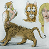
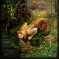
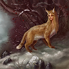

АРЫСЬ |
||
| БАЙКА ПРО ТЕТЕРЕВА АРЫСЬ РЕПКА КУРОЧКА РЯБА ПРИНЦЕССА НА ГОРОШИНЕ | ||
| Маша и медведь Морозко Лиса и журавль |
У старика была дочь-красавица, жил он с нею тихо и мирно, пока не женился на другой бабе, а та баба была злая ведьма. Невзлюбила она падчерицу, пристала к старику: - Прогони ее из дому, чтоб я ее и в глаза не видела. Старик взял да и выдал свою дочку замуж. Живет она с мужем да радуется, и родился у них мальчик. А ведьма еще пуще злится, зависть ей покоя не дает; улучила она время, обратила свою падчерицу зверем Арысь-поле и выгнала в дремучий лес, а в падчерицыно платье нарядила свою родную дочь и подставила ее вместо стариковой дочери. Так все хитро сделала, что ни муж, ни люди - никто обмана не заметил. Только старая мамка одна и смекнула, а сказать боится. С того самого дня, как только ребенок проголодается, мамка понесет его к лесу и запоет: - Арысь - поле! Дитя кричит, Дитя кричит, пить-есть хочет. Арысь - поле прибежит, сбросит свою шкурку под колоду, возьмет мальчика, накормит; после наденет опять шкурку и уйдет в лес. «Куда это мамка с ребенком ходит?» - думает отец. Стал за нею присматривать и увидал, как Арысь-поле прибежала, сбросила с себя шкурку, стала кормить малютку. Отец подкрался из-за кустов, схватил шкурку и спалил ее. - Ах, что-то дымом пахнет; никак, моя шкурка горит! - говорит Арысь-поле. - Нет, - отвечает мамка, - это, верно, дровосеки лес подожгли. Шкурка сгорела, Арысь - поле приняла прежний вид и рассказала все мужу. Тотчас собрались люди, схватили ведьму и прогнали ее вместе с ее дочерью. |
   |